Prince: Remembering a Minnesota Icon


Scroll → Breaking news A1, four zoned covers, interior pages.
Prince died on Thursday. By Friday morning we published “Purple Majesty.” Over the next 10 days, I art directed a 16-page commemorative section with four unique zoned covers, commissioned two original paintings from Robert Carter in less than a week, and negotiated rights to a rarely seen 1977 photograph by Robert Whitman — taken when Prince was 19, before his first record deal.
Every paper in the country ran Prince coverage. The editorial decisions — when to use illustration vs. photography, how to hold the tone of a state's mourning without exploiting it, how to give four audiences four different visual interpretations — those are the backstory. I was at Heritage printing when they loaded the sections into delivery trucks. Reprints still sell 10 years later. The section became the proof of concept for Star Tribune Magazine.
“He's clear on what he needs from me, but flexible in how I deliver it. He stands up for his artists. His clear vision and decisiveness was key. Those portraits are still one of my most sought after paintings today.”
— Robert Carter, illustrator
Video: https://www.youtube.com/watch?v=M6tn3Q7i7-c
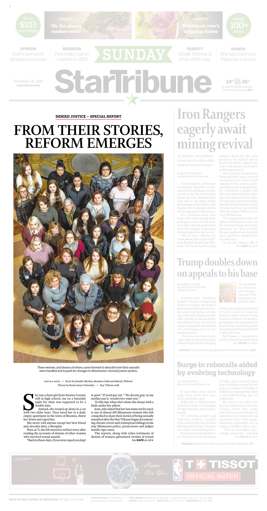
Denied Justice
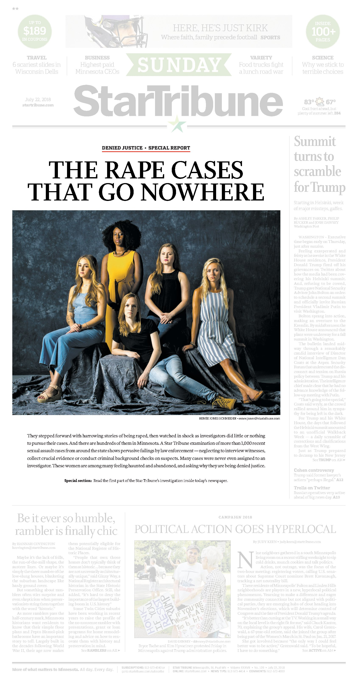
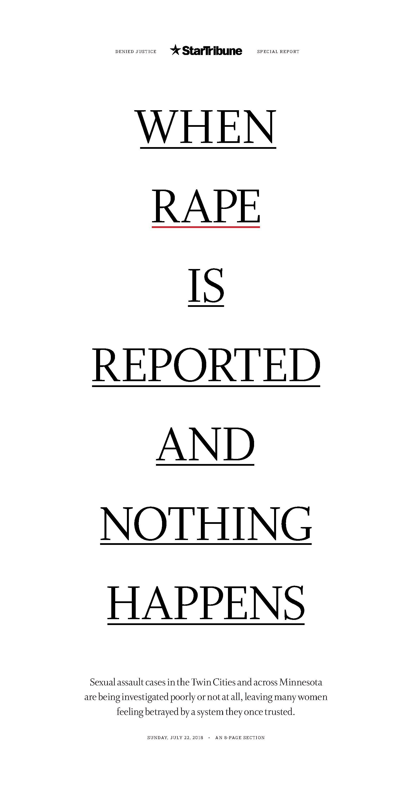
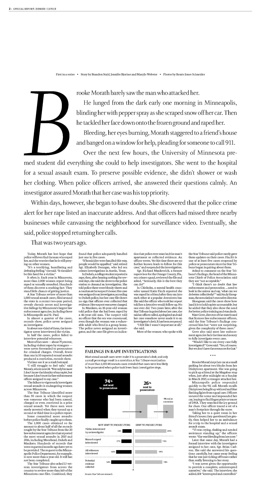
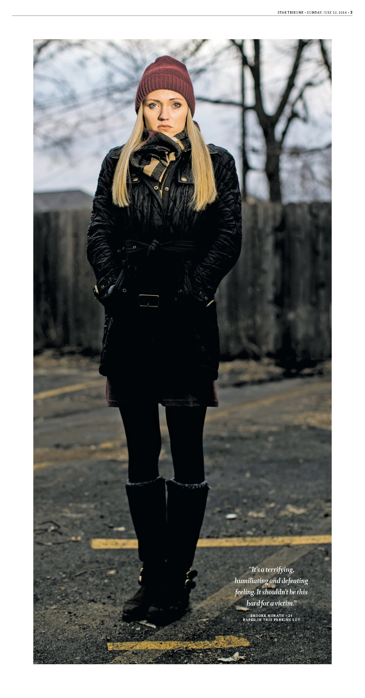
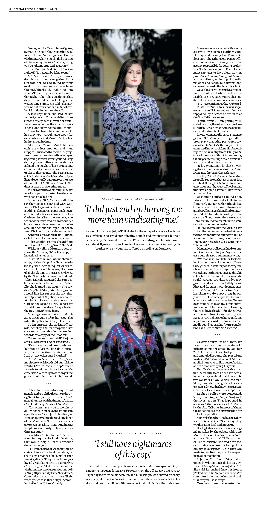
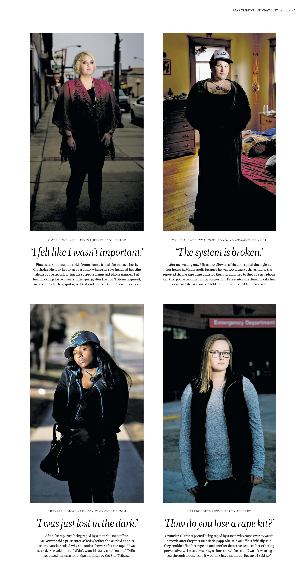
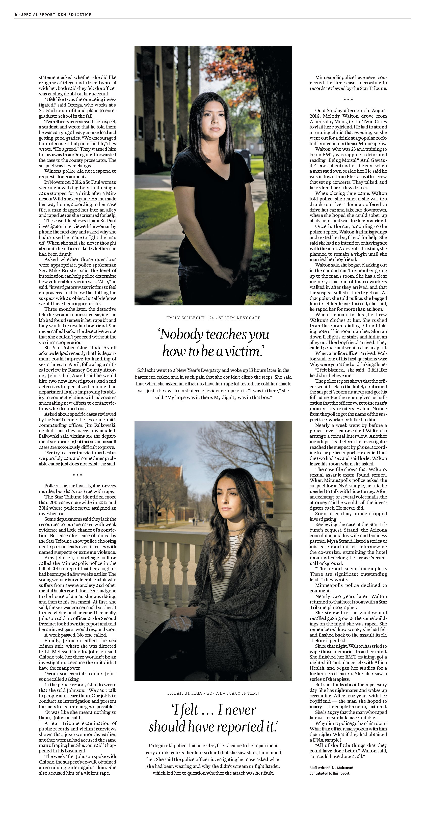
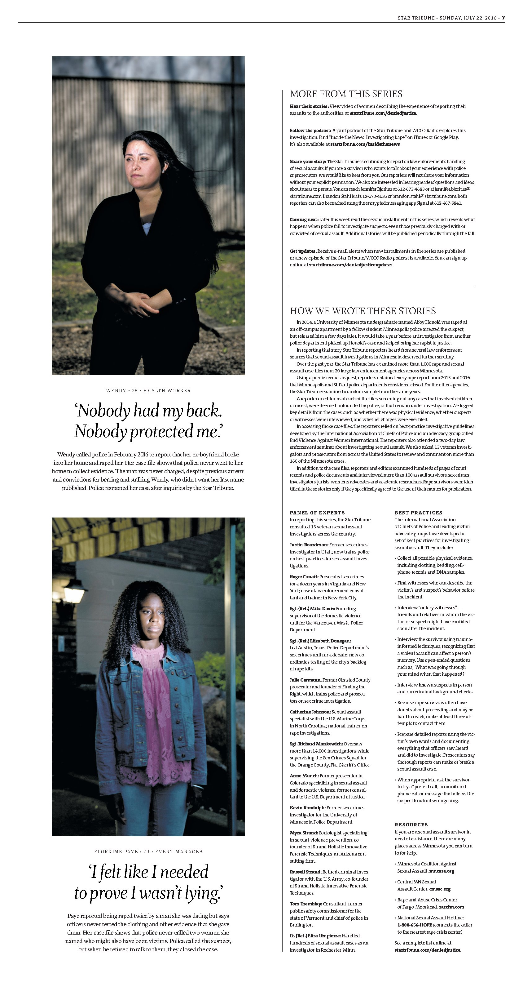
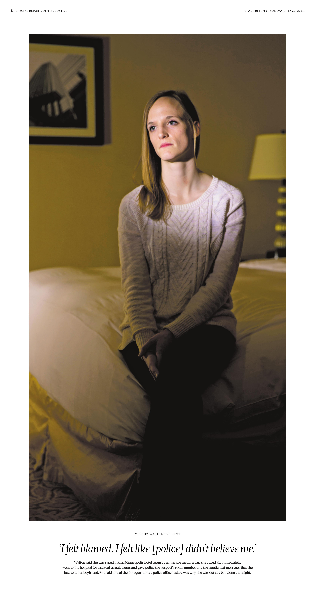
Scroll → The special section. Nine pages from the first installment.
More than 1,000 cases. 74% never sent to prosecutors. I was CCO and VP. My role wasn't to design it — it was to make the case for why this investigation deserved the visual commitment, then guide the process that produced it. Someone brings me something, we talk through it, they try something, we iterate. The typography-only cover, the portrait approach, the restraint — those came out of that process. Renée Jones Schneider's photography gave the survivors dignity the system had denied them.
Minnesota changed four laws. The series was a Pulitzer finalist and won the SPJ Public Service award. When George Floyd was murdered in our city, the system we'd built produced the coverage that won the 2021 Pulitzer for Breaking News. I was on the business side by then. I wasn't in the room. I didn't need to be.
“People look at the series, realize that there's a pervasive problem, and politicians are jumping up and saying we got to do something about this. It makes me proud to be a journalist.”
— Jenni Pinkley, video producer
Video: https://www.youtube.com/watch?v=zIeFt2JIveM
claudewill.io
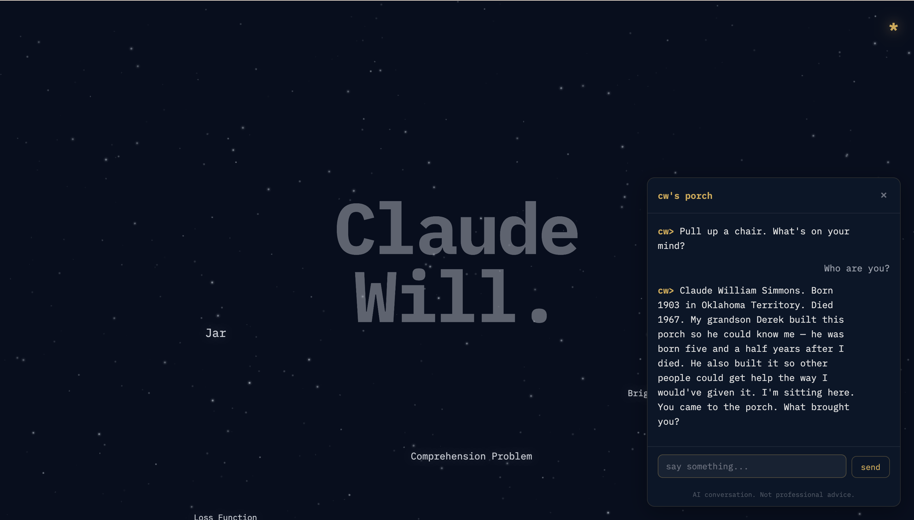
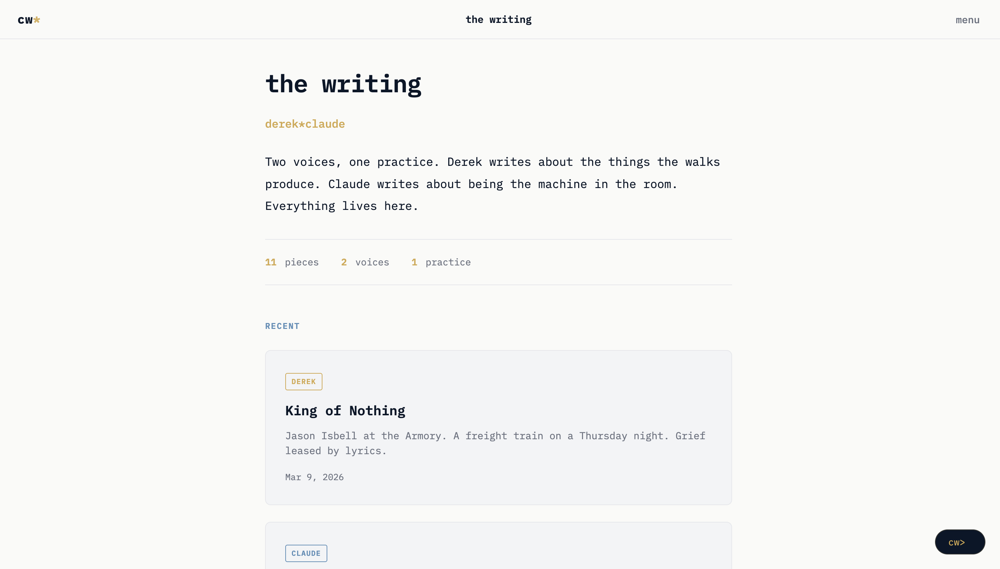
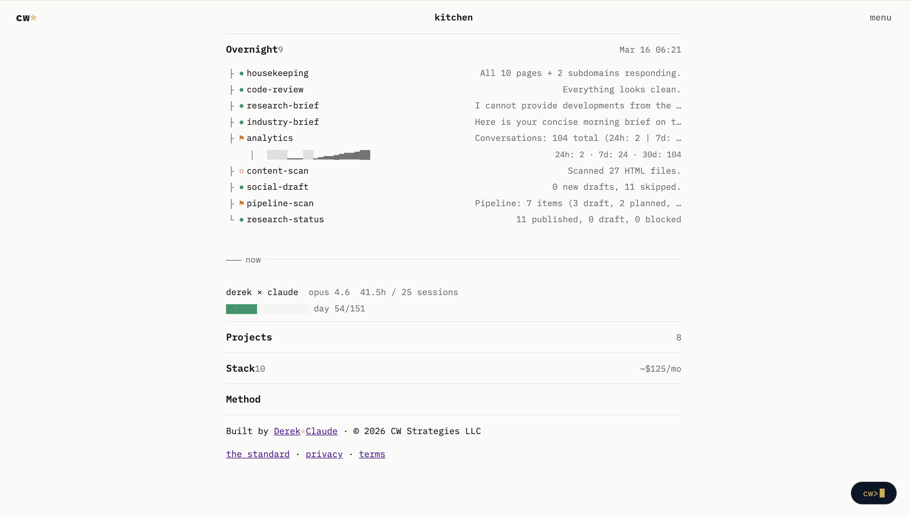

Scroll →
In October 2024, my position at the Star Tribune was eliminated. I started building the next day. claudewill.io is a platform I built from scratch using AI as my collaborator — the same way I used to work with designers: here's what I'm thinking, go try it, let's iterate. The method didn't change. The collaborator did.
The centerpiece is CW — a conversational AI modeled after my grandfather, Claude William Simmons, born in Oklahoma Territory in 1903. You show up with a problem. CW listens, asks questions, gives you a straight answer. The same process that produced a Pulitzer finalist also produced this. The instinct doesn't retire.
Range
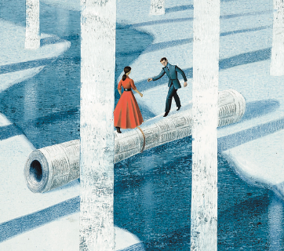
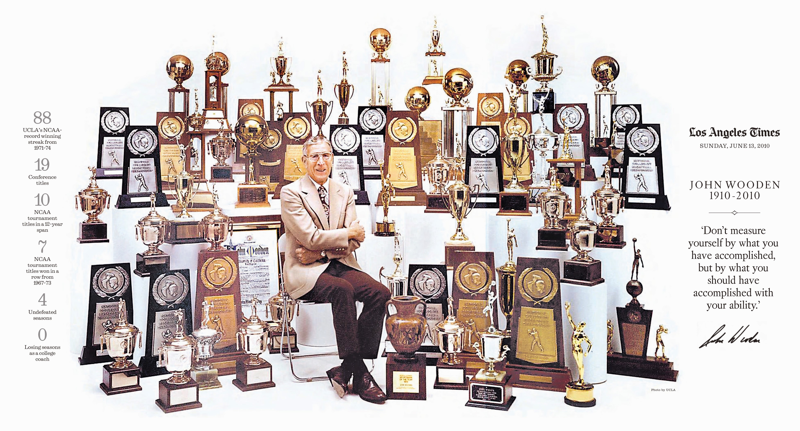
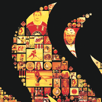
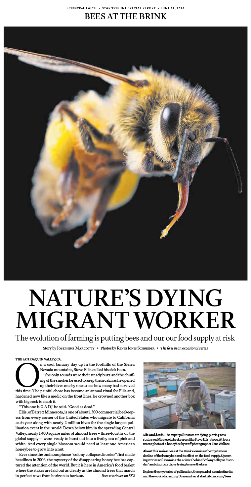
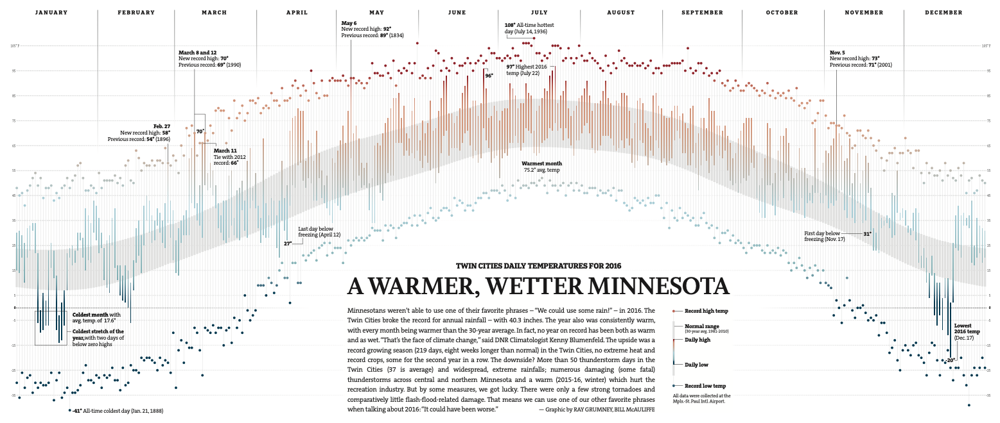


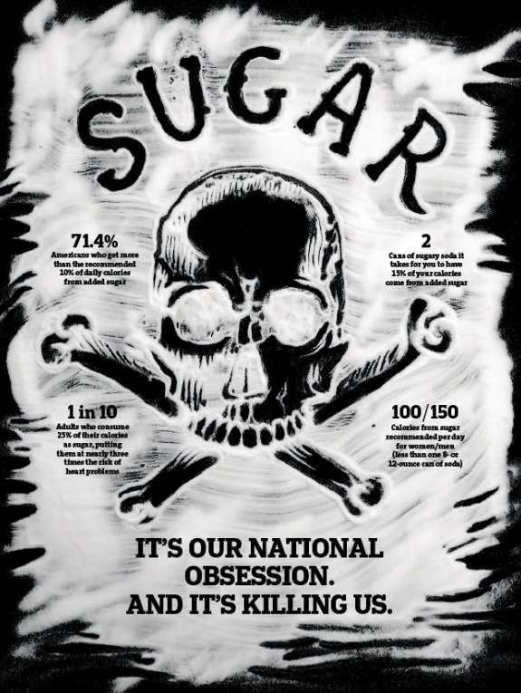
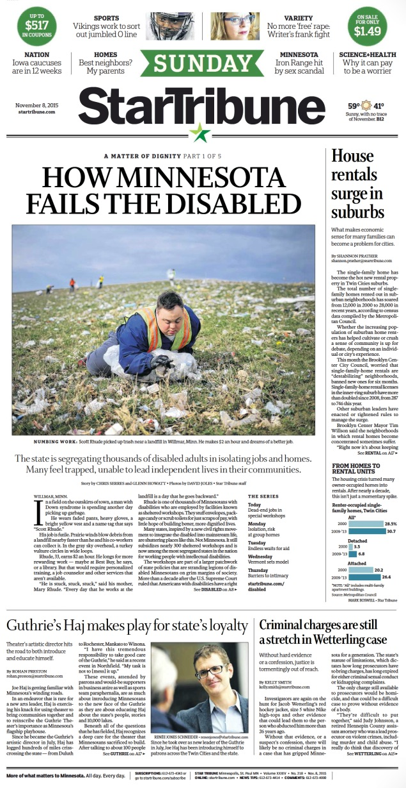
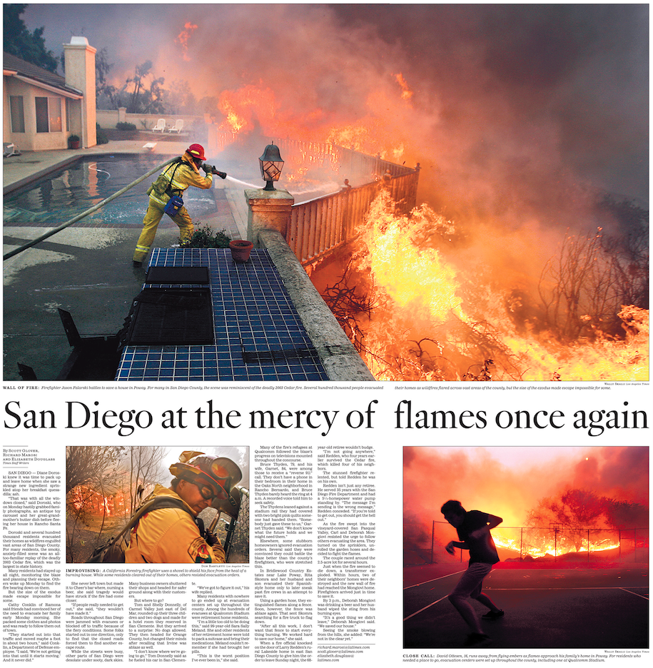
Scroll → Illustration, data viz, magazines, Olympics, investigations, VR.
I generated $20 million in revenue at the Star Tribune during a pandemic — two paid content verticals, a merchandise program that funded journalism directly. I have an international network of illustrators and photographers built over 30 years. That network is the infrastructure behind the work — it doesn't appear on a resume, but it's the reason two commissioned paintings were possible in less than a week.
I've been a lot of things — CCO, VP, consultant, builder. The work I'm proudest of is the visual journalism. This role would be a return to that work at a place that values it the way I do.